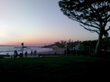
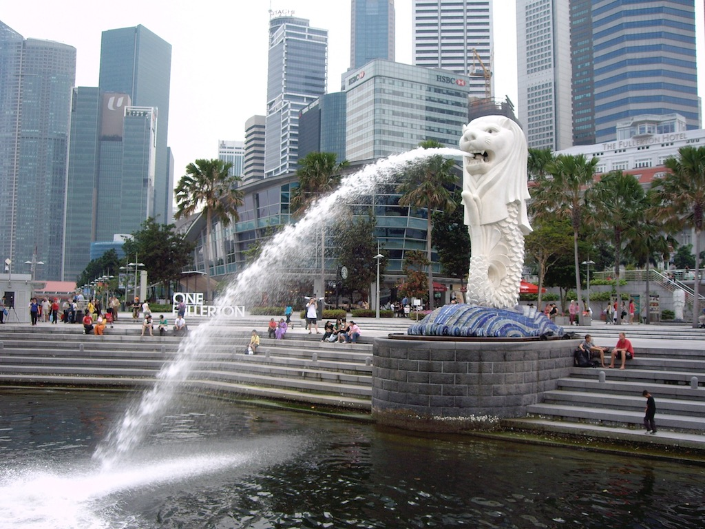

2007
- Hyderabad, India - January 7-18
- Aksi, Kazakhstan (flew to Uralsk) - August 15-23
- Huntsville, Alabama - August 6-8
- Carlsbad, California - August 26-31
- Huntsville, Alabama - October 7-20
- Hyderabad, India - November 12-20
- Huntville, Alabama - November 25-December 7
2008
- Hyderabad, India - February 12-22
- Houston, Texas - April 6-11
- Hyderabad, India - June 11-20
- Hyderabad, India - July 8-15
- Mumbai - October 31-November 4
- Hyderabad, India - November 4-7
- Foxboro, Massachusetts - December 8-11
2009
I'm sure that I must have been on more trips this year than the four listed, but finding the details has eluded me.
- Singapore - January 31-February 8
- Hyderabad, India - February 8-14
- Dubai - April 18-24
- Hyderabad, India - September 27-October 3
2010
With only two and a half years before retirement I had been thinking of starting to take things easier. However, travel this year has been as hectic as ever! Over the year I have been to:
- Hyderabad, India - March 1-5
- Milan - March 29-31
- Aberdeen - April 27-28
- Hyderabad, India - May 1-15
- Milan - May 19-21
- Houston, Texas - May 25-28
- Dubai - July 5-11
- Tokyo, Japan - August 23-27
- Lake Forest - Oct 4-8
- Singapore - October 18-22
- Foxboro, Massachusetts - November 15-19
- Munich - November 25-26
2011
This year there was the perception of easing off. At least the number of trips reduced and there were none to the Far East. Over the year I have been to:
- Foxboro, Massachusetts - February 23-26
- Milan - March 15-16
- Dubai - May 16-19 with a day trip to
- Abu Dhabi - May 18
- Foxboro, Massachusetts - June 20-25
- Houston, Texas - July 31 - August 5
- Lake Forest, California - August 22-26
- Dubai - September 29 - October 1 then on to
- Dammam, Saudi Arabia - October 2-4
- Bratislava, Slovakia - November 14-17
2012
- Houston, Texas - February 13-17